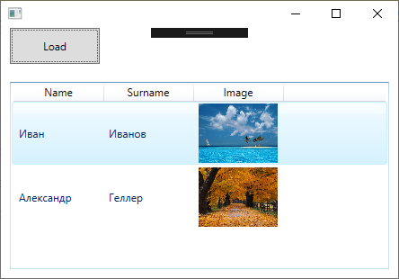

ListView - это элемент пользовательского интерфейса Android, который отображает список данных в виде прокручиваемого списка. Часто требуется загрузить данные из базы данных SQL Server и отобразить их в ListView для удобного просмотра. Для добавления данных из базы данных SQL Server в ListView необходимо выполнить следующие шаги: Создать соединение с базой данных SQL Server. Для этого используется класс SqlConnection из библиотеки System.Data.SqlClient. Написать SQL-запрос для выборки данных из базы данных. Например, "SELECT * FROM Table". Создать объект класса SqlDataAdapter, который позволит выполнить SQL-запрос и получить результаты в виде таблицы данных. Использовать метод Fill объекта SqlDataAdapter для заполнения объекта класса DataSet данными из запроса. Пройтись циклом по данным в DataSet и добавить их в список элементов ListView. Для этого нужно создать объект класса List и добавить каждую строку данных в список. Создать адаптер для связывания данных из списка с элементами ListView. Для этого используется класс ArrayAdapter. Установить адаптер для ListView и отобразить данные. Пример кода для загрузки данных из базы данных SQL Server в ListView:
// Создание соединения с базой данных string connectionString = "Data Source=ServerName;Initial Catalog=DatabaseName;Integrated Security=True"; SqlConnection connection = new SqlConnection(connectionString); // SQL-запрос для выборки данных string query = "SELECT * FROM Table"; SqlCommand command = new SqlCommand(query, connection); // Создание объекта SqlDataAdapter SqlDataAdapter adapter = new SqlDataAdapter(command); DataSet dataSet = new DataSet(); // Заполнение DataSet данными из запроса adapter.Fill(dataSet, "Table"); // Создание списка для хранения данных ListdataList = new List (); // Цикл по данным в DataSet foreach (DataRow row in dataSet.Tables["Table"].Rows) { dataList.Add(row["ColumnName1"].ToString() + " " + row["ColumnName2"].ToString()); } // Создание адаптера для связывания данных с ListView ArrayAdapter dataAdapter = new ArrayAdapter (this, Android.Resource.Layout.SimpleListItem1, dataList); // Привязка данных к ListView ListView listView = FindViewById (Resource.Id.listView); listView.Adapter = dataAdapter; После выполнения этих шагов, данные из базы данных SQL Server будут успешно загружены и отображены в ListView.
private void Window_Loaded(object sender, RoutedEventArgs e)
{
zivotnie = db.zivotnie_.ToList();
for (int i = 0; i < zivotnie.Count; i++)
{
WrapPanel wp = new WrapPanel();
System.Windows.Controls.Image img = new System.Windows.Controls.Image();
System.Windows.Controls.Label labelName = new System.Windows.Controls.Label();
wp.Height = 300;
wp.Width = 200;
labelName.Content = zivotnie[i].Name;
string savePath = System.IO.Path.GetFullPath(@"..\..\img");
savePath = savePath + "\\" + zivotnie[i].Image + "";
BitmapImage bitmap = new BitmapImage();
bitmap.BeginInit();
bitmap.UriSource = new Uri(savePath);
bitmap.EndInit();
img.Source = bitmap;
img.MouseDown += new MouseButtonEventHandler(MyImage_MouseDown);
img.Height = 250;
img.Width = 200;
img.Uid = zivotnie[i].id.ToString();
wp.Children.Add(img);
wp.Children.Add(labelName);
MyListView.Items.Add(wp);
}
}
private MediaPlayer player = new MediaPlayer();
private void MyImage_MouseDown(object sender, MouseButtonEventArgs e)
{
Point mousepos = Mouse.GetPosition(this);
IInputElement element = InputHitTest(mousepos);
Image image = element as Image;
string elementname = image.Uid;
int bookCode = int.Parse(elementname);
selectedBook = zivotnie.FirstOrDefault(book => book.id == bookCode);
if (image != null)
{
int bookId = Convert.ToInt32(image.Uid);
selectedBook = zivotnie.FirstOrDefault(book => book.id == bookId);
if (selectedBook != null)
{
TextBlock Opis = new TextBlock();
Opis.Text = "Описание " + selectedBook.Opisanie;
Opis.TextWrapping = TextWrapping.Wrap;
TextBlock Fakt = new TextBlock();
Fakt.Text = "Факт " + selectedBook.Interesting;
Fakt.TextWrapping = TextWrapping.Wrap;
System.Windows.Controls.Label nazv = new System.Windows.Controls.Label();
nazv.Content = selectedBook.Name;
Image img = new Image();
img.Source = image.Source;
img.Width = 300;
img.Height = 300;
MyListView2.ItemsSource = new List